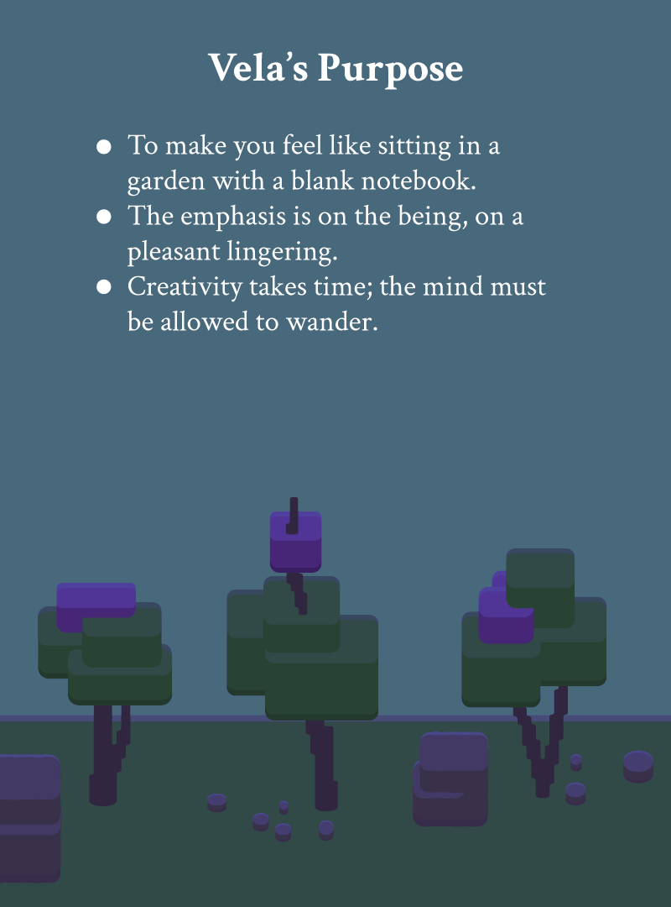
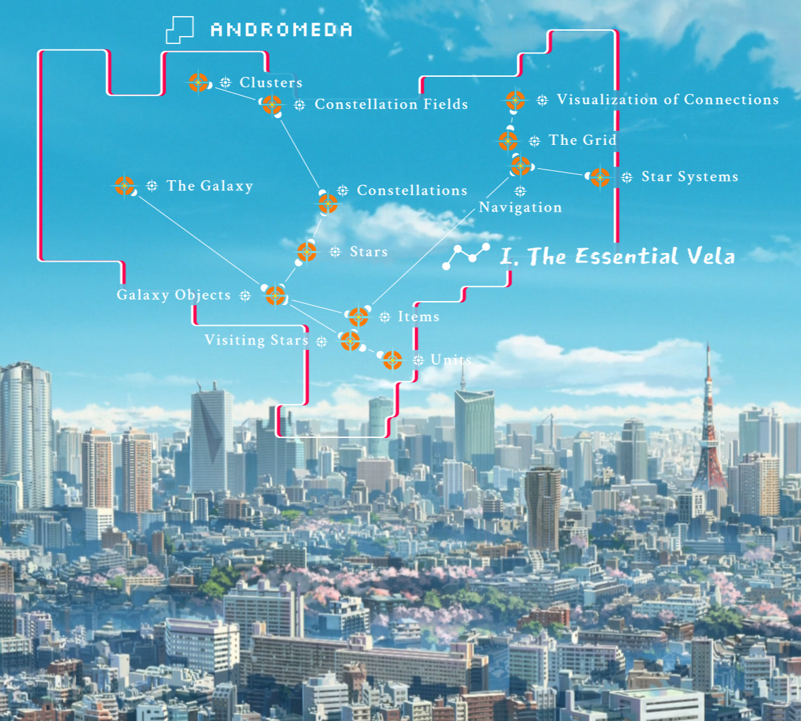
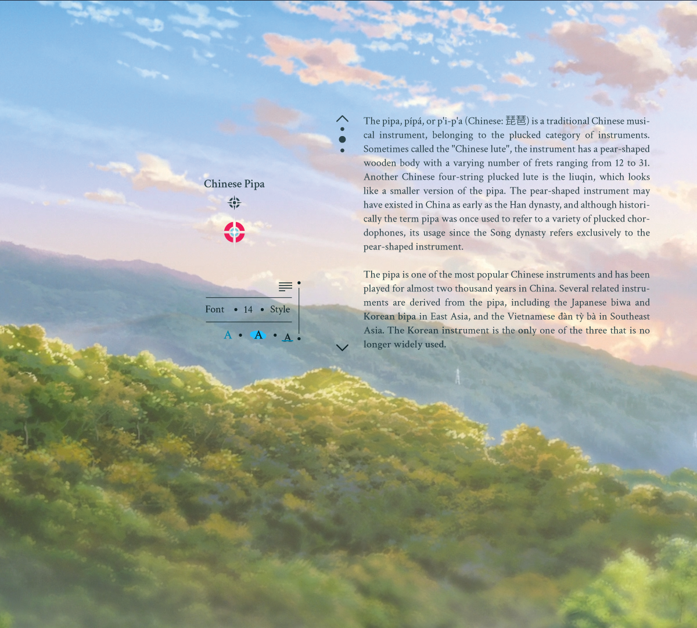

... an accessed star (lime slice) with one item: the frame with text.
Items are the actual container of user content (text and images).
Items make up the content of a star.
From afternoon to night:
... you can adjust item backgrounds to make text-to-sky contrasts stronger than in these examples if desired. Here's a smooth time-lapse:
People
... are using ever larger screens,
... which take up most of their peripheral vision.
Unprecedented digital immersion.
Sitting in front of a (horizontal) wide screen that just shows an A4 (vertical) paper on a bland background has little to do with human nature.
Word processors are geared towards printing. Emerging in the early 90s, they were shaped by limited hardware; since then they changed little in design.
Then they're collab and brainstorming apps, but they're rigid, have a single-use-plastic design (small, shallow projects), and by emulating office tools (whiteboards, post-its...) they inherit their limitations. And mind map apps never worked for creativity (or anything): they enforce an hierarchy which is counter-creative; they don't feel dynamic and get crowded quickly.
Computers have become so much more. The proof lies in computer games.
Vela's purpose is to combine a computer game experience with work. That is: game graphics + spatial movement + dynamic object and information handling.

The backdrop thus far are stylized clouds and trees. The style is somewhere in between pixel art (blocky) and vector art (smooth contours), the result is cherry trees looking like candy (not intended). No AI is used for the art. The landscape as well as stars change with every season. In this presentation you can see a spring (cherry blossom stars) and summer version (lemon, lime slice stars). This is just a simple environment that allows me to test lighting. The goal is to have artists create beautiful natural and urban spaces.
The Development
... so far was great fun. This is what I love to do.
In Vela come three big loves of mine together: nature, creativity and tech.
First I developed a design concept which took two years and three revisions. Then:
I've been busy building an engine on top of the 2D framework (LÖVE): creating a camera, animations, constellation engine, text engine and more.
Worlds


The whole design concept of Vela was conceived with worlds like this in mind. However, this level of artistry is beyond my league. (Disclaimer: these images are from an older presentation and the star and connection design you can see here is already obsolete.)
This will be the work of skilled artists.
In the following link are more such Vela world impressions, also showcasing more use cases for Vela. Since the design has already progressed, this older presentation is outsourced onto a Canva presentation to avoid confusion. The core ideas of stars, constellations and fields are the same though. It serves the purpose of giving you an impression how natural and urban worlds will look.
Don't forget to imagine that it is live-rendered, with forming and moving clouds, wind shaking the trees, dynamic changes of light throughout day to night.
A more in-depth look into the design of Vela version I.
Constellation
... the constellation symbol and name are floating nearby.
Field
... the field symbol and name is on the upper left. The frame adjusts itself.
Star
... an opened / accessed star. It contains three items, two with images and one with text. As with fields, the frame adjusted itself around the three items.
Design • Paradigms
(this is a short extract of a wider scope of design decisions)
Vela's design is about finding and developing ideas. It's not about publishing.
Much of the design stems from what I believe are the three pillars onto which creativity can thrive: space, pleasantness (beauty) and associative creation.
Stars, Constellations and Fields are there to manage your content: the items.
Every star is equal...
... and every connection is equal and they don't have directions.
... this prevents a hierarchy of nodes (your stars). An initially enforced hierarchy is poison for creativity. Just let your thoughts flow, think of management later.
If you want a constellation to represent time, progress, flow... simply build it from left to right, or skywards.
The galaxy doesn't encourage a direction, you can expand leftwards, or skywards. In stars: you can place items left of the star, and anywhere around it.
Constellations and fields will be recognizable by their appearance (more than their names), just as with real constellations.
Galaxy objects don't need names. Their unique identity is their position in the sky. Two objects of the same kind cannot sit on the same spot. You can give them names.
No nesting, no folders and subfolders. Vela forces users to move over a 2D space, the sky / galaxy, to locate content. Everything exists side by side.
The navigational space is 2D because the screen is a two-dimensional surface. It shall feel inviting like standing before a canvas or an open window. Interacting should feel direct like writing to a blackboard.
Vela is designed for horizontal movement. It's meant for walking. Our most natural state, and so conducive for creativity, as being creative is itself a state of motion.
Vela embraces the space widescreens provide.
Anything looking like a web or social media page is a big no-no!
No drop-down menus.
No static tool bars / panels.
And such.
It's being solved differently.
The design of features and functionalities is set in stone for Version I. It was finished long before any visual draft or line of code had been drawn or written.
Afterword
It has been scientifically demonstrated that being in nature enhances creativity. We've spent the last 400.000 years there and much longer as evolving mammals, that's why I believe we're hardwired for its experience.
However, since recently (2007) more people live in urban areas than in rural ones. Wouldn't it make sense to bring nature to their apartments?
Pot plants are one solution.
Another could become Vela.
Be like Jack London and have your own haven of natural serenity. For the sake of creativity. Don't be like Jack London and drink heavily. Also for the sake of creativity.
Another source of inspirational pleasantness for me have been computer game graphics and hand-drawn art. There's something so soothing about them; the clarity and evenness of the colors and contours; the beauty of nature in a clearer, liberated way like Asian Gongbi or Ukiyo-e drawings. And it's alive due to motion and animation.
In Vela I'm striving to give you both: nature as pleasant art. There will also be beautiful urban spaces.
About my motivation: I've always been having a strong creative streak, but there was no digital tool out there that would be a good friend and vessel for the scatterbrain and endless train of thoughts that is my mind. The best I could do was to sit in a garden with a A4+ notebook with blank pages (no lines!) and drawing pen for writing prose. Like this I literally developed the first design concept of Vela. Something like Microsoft Word was out of question, for me it's revolting. Its design has nothing to do with developing ideas.
Functional Scope
You're now having a pretty good idea what Vela is about.
The overview concludes with the previous chapter.
If you're curious about details, you can read on.
Platforms
Windows
macOS
Linux
Galaxy
The galaxy is your local save file.
The galaxy appears as a boundless sky with a landscape on the ground.
Create as many galaxies as you want.
Almost all you do in Vela happens inside a galaxy.
Items
Fill items with text and images.
Like galaxy objects, items have a "hard border" and cannot overlap. They're resizable and customizable.
A model for items is Sublime Text.
The design aim for items is to be like text editors. Items need to have the feeling of lightness, flux and changeability of text editors, but it also need to allow some of the customs prose writers expect: styling like bold, italic, changing fonts, font colors, font sizes, text highlighting and more.
Lines, or paragraphs, play a pivotal role.
A line / paragraph can hold text or an image.
Displayed line numbers (optional).
Items • Text
The word you're hovering over with the mouse or writing on is highlighted, as is the sentence you're hovering over or writing on.
... holding a key like 'o' will change the color of the highlighted word 'orange'. If you also hold down 's' (for sentence) it will change the color of the whole sentence. You can do that while hovering with mouse or while writing.
Any word can have any font, size, style and additional features like underline, strikethrough etc.
Four text alignments (left, right, center, justify).
Vela comes with one serif, one sans-serif and one handwriting font: Crimson Pro (+ Crimson Text), Montserrat, Gaegu. All three are free and open-source font families. You can load additional font families into Vela (.ttf file).
... next to fonts, Vela is capable of dealing with any graphics and have them be part of the text flow. They'll behave like any other word.
Items will automatically provide their own background-adjustments for pleasing background-to-text contrasts against the backdrop of the sky. Pre-set contrasts will be adjustable in strength; backgrounds and fonts are directly customizable.
Items • Images
An image takes up a line / paragraph.
Only one image per line.
Images will keep their aspect-ratio and will fill the width of the item (text width) as long as resolution is >= item width. Otherwise it will be smaller and placed according to text-alignment.
Images will have a smooth frame that contrasts them to the background / sky.
.jpg / .jpeg, .png .bmp .tga .hdr .pic .exr
Galaxy Objects
... like stars, constellations and fields: are grabbable, movable, searchable ...
Appearance
Different star graphics that befit the seasons (snowflake crystals in winter, cherry blossoms in spring...).
Your HUD, your galaxy objects and items are customizable to some degree: choosable colors, size...
Beautiful lush, handdrawn worlds of natural and urban spaces
Natural lights that blend in dynamically for the actual, correct time of your location.
Anti-Aliasing
Interaction
Shortcuts that make item and galaxy interaction a breeze.
Same shortcuts may have different effects whether you are in the galaxy or interacting in an item.
The way shortcuts work may be novel. Hint: it's not gonna be Ctrl + key, Ctrl + Shift + key etc.
Shortcuts work by just holding a single key down for a short amount of time, like 0.2 seconds. Vela realizes you wanted to trigger an action and won't write that key down as a letter if you're interacting with text.
Exceptions are: Ctrl + z, x, c, v, as they're so popular. They may be the only ones.
And more fancy interactions that may be new within today's desktop application landscape.
Navigation (HUD, inventory):
You'll have a customizable HUD (heads-up display) that helps you take bearings within your galaxy.
The HUD, like real HUDs, is "on the screen", visually overlaying the galaxy.
The HUD represents the user.
The HUD shows arrows at the screen edges to the closest galaxy objects outside of the camera's field of view. The arrows' appearances match that of the galaxy objects.
The HUD offers to show an area with all your constellations and fields as small, stylized miniature images. You will recognize them by their shape. Clicking on one will make the camera fly you there and center the target object.
"Tell" the HUD (by typing into a search field) what you're looking for. It'll provide suggestions of galaxy objects (star, constellation, field, items). Click on a suggestion to let the camera fly you there.
The HUD comes with an inventory. A slot can hold one of: text, image, item, star, constellation or field. The inventory doesn't have a fixed size, but grows and shrinks dynamically as you add or remove objects.
Objects in the inventory are properties of the HUD and not of the galaxy.
The HUD, belonging to the user, is saved in the local user file. So everything regarding the HUD, including the inventory with all stored objects, is saved on app close and will still be there on app start.
The inventory's purpose is caching and carrying. Use the HUD to take objects to other galaxies.
Loading and Import
In your OS there will be one, single folder which works as your files gateway to Vela.
Everything you save and export and everything you load and import from Vela happens to and from this one folder.
Apart from images and Vela files, Vela will also load plain text files (.txt) from that folder whose content you can add to your items.
.txt file is the only text file format that is importable.
You can paste texts saved to your OS's clipboard (Ctrl + C) directly to your items.
Saving and Export
The galaxy is your default save file. Any interaction is saved live (can get turned off).
Any Galaxy object is savable. Each will contain all its children, meaning saving a constellation will contain all the stars, with all the items and all the items' contents. The suffix of the files may look like this: .VelaGalaxy, .VelaStar, .VelaConstellation, .VelaField, .VelaItem. Use this to share work, without having to share the whole galaxy.
All images loaded into Vela are linked by default, meaning Vela just remembers the path. They can get embedded into the Vela file.
Item content is exportable as HTML (images and styling included) or plain text (no images, no styling).
The exported HTML files are openable in Microsoft Word, where the styling / formatting is conserved (that's because the exported HTML file will use simple in-line styling, which Word can understand).
You can export on any level. Exporting a star e.g. will make Vela go through all its items and put everything together into one simple and beautiful HTML page. It can do the same with constellations, fields, even your galaxy.
Planned for later (after version 1.0)
Cloud service.
... that keeps your files and images.
... and allows other users to join your galaxy and work on it in real-time.
Touch support.
A mobile (smartphone) app.
For now
Initially, Vela will be a standalone, "singleplayer" desktop application.
All the effort goes into achieving a good user experience first. Then we can think of more.
There's no point in making anything collaborative while it doesn't yet feel convincing for a single user.
The original design for Vela was conceived for introvert creatives.
The design is standing, as is the engine written on top of the framework. But there's still a lot of figuring-out to do. How will users feel? Does opening Vela positively pop into your eyes and give you good vibes? Do interactions contribute to a Zen flow?
All that you've seen thus far is still a small subset of the design concept behind it. This is to let you know that there's so much more waiting than what this list offers.
Credits
The content of the star showcase (pesto recipe) early on (text) and in the chapter "Design • Galaxy Objects" (text and images) is retrieved from loveandlemons.com: Love and Lemons, LLC. The recipe is shortened for presentational reasons.
The items contents (text) in the video "VELA Natural Lights Palette" showcasing prose are the first three chapters from three books (in order): "Build What Matters" by Ben Foster and Rajesh Nerlikar; "Wild Swans" by Jung Chang; "The River's Song" by Suchen Christine Lim (first chapter of this book also showcased in the next video: "Smooth Twilight Timelapse")
Curved widescreen graphic in chapter "People": Samsung Electronics Co., Ltd.
Peripheral Vision graphic in chapter "People": original retrieved from Wikipedia article of "Peripheral Vision". Graphic uploader: Zyxwv99. The graphic has been altered for presentational reasons.
Backgrounds in the images in chapter "Beyond Version I": CoMix Wave Films.
Source of photo of Jack London writing in chapter "Afterword": The Book of Jack London by Charmian London.